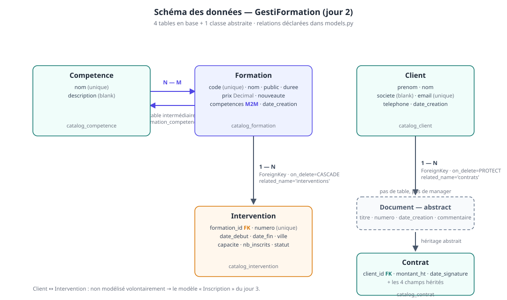
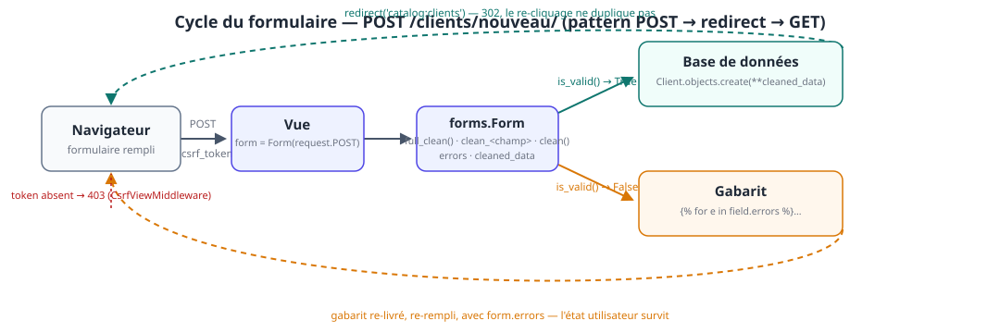

À la fin de la journée, les participants sont capables de :
- définir des modèles Django : champs, types, contraintes, relations (
ForeignKey,ManyToManyField) ; - générer, lire et appliquer des migrations (
makemigrations,migrate,sqlmigrate) ; - écrire des requêtes ORM : filtrage, tri, agrégats, F objects ;
- identifier et corriger un N+1 avec
select_related/prefetch_related; - comprendre l'héritage de modèle abstrait (Document → Contrat) ;
- refactoriser les vues du jour 1 — mêmes URLs, mêmes gabarits — au profit de l'ORM ;
- écrire un formulaire
forms.Formvalidé côté serveur :is_valid(),errors,cleaned_data,clean_<champ>, CSRF.
Livrable de la journée
- 5 modèles :
Competence,Formation,Intervention,Client,Contrat(héritage) ; - migrations appliquées + base SQLite peuplée via un script de seed ;
- pages catalogue et détail branchées sur l'ORM (la fiche détail gagne ses interventions à venir) ;
- formulaire « Nouveau client » validé côté serveur + page liste des clients avec recherche ;
- les 3 pages du jour 1 toujours accessibles, avec les mêmes URLs.
💡 Fil conducteur : le découplage MVT du jour 1 paie aujourd'hui. Les vues changent de « moteur » (littéraux Python → ORM) ; les URLs et l'essentiel des gabarits ne bougent pas. On ne « réécrit » pas le site, on le rebranche.
| Heure | Séquence | Blocs programme |
|---|---|---|
| 09h00 – 09h15 | Reprise du J1, check + serveur + commit |
— |
| 09h15 – 10h45 | B5·a — Modèles & migrations | Bloc 5 |
| 10h45 – 11h00 | Pause | |
| 11h00 – 12h45 | B5·b — ORM : requêtes, relations, F objects, optimisation | Bloc 5 |
| 12h45 – 13h45 | Déjeuner | |
| 13h45 – 14h15 | B5·c — Héritage de modèle (Document → Contrat) | Bloc 5 |
| 14h15 – 16h15 | B6 — Formulaires + atelier « Nouveau client » | Bloc 6 |
| 16h15 – 16h30 | Pause | |
| 16h30 – 17h00 | Démonstrations, synthèse, preview du jour 3 | — |
5.1. Du littéral à la base de données
Au jour 1, catalog/views.py contenait :
FORMATIONS = [
{'code': 'PY-101', 'nom': 'Django : initiation', 'prix': 1890.0, …},
…
]
Trois limites, toutes rédhibitoires dès qu'il y a un deuxième utilisateur :
| Limite du littéral | Ce que la base apporte |
|---|---|
| tout est perdu au redémarrage du serveur | persistance (fichier db.sqlite3) |
| une seule « source de vérité » en mémoire, impossible d'ajouter sans code | écriture par un admin, un import, un autre service |
aucune intégrité (rien n'empêche deux code identiques) |
contraintes (unique, NOT NULL, clés étrangères) |
L'ORM (Object-Relational Mapping) de Django traduit des expressions Python en requêtes SQL, sans qu'on écrive de SQL :
| En SQL (mental) | En Python (Django) |
|---|---|
SELECT * FROM formation WHERE nouveaute = 1 |
Formation.objects.filter(nouveaute=True) |
ORDER BY date_debut |
.order_by('date_debut') |
WHERE capacite - nb_inscrits > 0 |
.annotate(places=F('capacite') - F('nb_inscrits')).filter(places__gt=0) |
JOIN / GROUP BY |
select_related, prefetch_related, Count, Sum |
💡 Idée clé :
models.pyest la source de vérité unique sur le schéma. La base, les migrations, l'admin (jour 3), les formulaires (aujourd'hui), les tests (jour 4) en découlent. Si le schéma doit changer, on change le modèle — jamais la base à la main.
5.2. Schéma du modèle de données — GestiFormation

Le vocabulaire des relations, tel qu'on le verra écrit dans models.py :
| Relation | Entre | Déclarée par | Suppression de la source |
|---|---|---|---|
| 1 — N | Formation → Intervention |
ForeignKey dans Intervention |
CASCADE : les interventions suivent la formation |
| 1 — N | Client → Contrat |
ForeignKey dans Contrat |
PROTECT : on ne supprime pas un client qui a des contrats |
| N — M | Formation ↔ Competence |
ManyToManyField dans Formation |
table intermédiaire formation_competences |
| héritage | Document (abstrait) → Contrat |
Meta: abstract = True |
aucune table pour Document |
À noter : la relation Client ↔ Intervention n'est pas encore modélisée. On la laissera volontairement en blanc : le jour 3, elle deviendra le modèle Inscription (avec date, statut, montant) — c'est la démonstration que ajouter une entité métier, c'est ajouter un modèle, pas refaire le site.
💡 Choix pédagogique :
Intervention.nb_inscritsest un compteur stocké (et non leCOUNTd'une table d'inscriptions) car celle-ci n'existe pas encore. C'est exactement le bon support pour les F objects :F('capacite') - F('nb_inscrits'). Le jour 3, le compteur sera maintenu par les vues d'inscription.
5.3. catalog/models.py — le code de référence
from django.db import models
from django.db import models
class Competence(models.Model):
"""Compétence visée par une formation (ex. « ORM », « Templates »)."""
nom = models.CharField('compétence', max_length=80, unique=True)
description = models.TextField('description', blank=True)
class Meta:
verbose_name = 'compétence'
ordering = ['nom']
def __str__(self):
return self.nom
# Create your models here.
class Formation(models.Model):
"""Une formation du catalogue — le « produit » de l'organisme."""
code = models.CharField('code', max_length=12, unique=True) # PY-101
nom = models.CharField('intitulé', max_length=120)
# blank vs null: null=False par défaut en base,
# blank=True permet d'avoir un champs de formulaire (python) lié à ce modèle vide
# ==> lié à des mécanisme de valeur par défaut 'tout public'
public = models.CharField('public visé', max_length=60, blank=True)
duree = models.PositiveSmallIntegerField('durée (jours)')
prix = models.DecimalField('tarif HT (€)', max_digits=10, decimal_places=2)
# gestion des valeurs par défaut:
# default => calculé en python
# db_default => // SQL
nouveaute = models.BooleanField('nouveauté', default=False)
# auto_now_add: datetime.now() lié au 1er .save() ==> CURRENT_TIMESTAMP
date_creation = models.DateTimeField('créée le', auto_now_add=True)
### relation many-to-many
# la table de correspondance est automatiquement créé
# maintenant un objet formation a un attribut .competences (collection d'objet competence)
competences = models.ManyToManyField(
Competence,
blank=True,
# relation réciproque: un objet comptetence a accès un attribut .formations
related_name='formations',
verbose_name='compétences',
)
class Meta:
"""
Métadonnée de la table
"""
# commentaire: le nom de la table est lié au nom de la classe
verbose_name = 'formation'
# tri par défaut dans une liste en python
ordering = ['code']
def __str__(self):
return f'{self.code} - {self.nom}'
class Intervention(models.Model):
"""Une intervention : une formation planifiée à des dates, dans une ville, avec une capacité."""
STATUS = [
("A", "à venir"),
("E", "En cours"),
("C", "Clotûrée"),
]
numero = models.CharField('numéro', max_length=16, unique=True) # PY-101-002
date_debut = models.DateField('date de début')
date_fin = models.DateField('date de fin')
ville = models.CharField('ville', max_length=60, default='Paris')
capacite = models.PositiveSmallIntegerField('capacité (places)')
nb_inscrits = models.PositiveSmallIntegerField('inscrits', default=0)
# énumération: injecter une liste de tuple dans choices=
statut = models.CharField('statut', max_length=1, default="A", choices=STATUS)
### relation One to Many (une intervention est liée à UNE formation mais une formation est liée à PLUSIEURS intervention)
formation = models.ForeignKey(
Formation,
verbose_name='formation',
null=True,
# on_delete = SET_NULL: si l'objet reférencée (formation) est supprimée ==> on mais NULL
# dans le champs formation est mis à null ET l'objet intervention est préservée
# on_delete = CASCADE: l'inverse, si formation supprimée ==> interventions supprimées
on_delete=models.SET_NULL,
related_name="interventions"
)
class Meta:
verbose_name = 'intervention'
ordering = ['date_debut']
def __str__(self):
return self.numero
## décorateur property permet d'utiliser un attribut self.places_dispo
## qui est calculé à la volée quand on l'utilise
@property
def places_dispo(self):
return max(self.capacite - self.nb_inscrits, 0)
class Client(models.Model):
"""Un client (société ou stagiaire) — créé par le formulaire du bloc 6."""
prenom = models.CharField('prénom', max_length=60)
nom = models.CharField('nom', max_length=60)
societe = models.CharField('société', max_length=100, blank=True)
email = models.EmailField('e-mail', unique=True)
telephone = models.CharField('téléphone', max_length=20, blank=True)
date_creation = models.DateTimeField('créé le', auto_now_add=True)
class Meta:
verbose_name = 'client'
ordering = ['nom', 'prenom']
def __str__(self):
return f'{self.prenom} {self.nom}'
class Document(models.Model):
"""Base **abstraite** : les documents administratifs partagent le même squelette."""
titre = models.CharField('titre', max_length=160)
numero = models.CharField('numéro', max_length=32, unique=True)
date_creation = models.DateTimeField('créé le', auto_now_add=True)
commentaire = models.TextField('commentaire', blank=True)
class Meta:
# ce modèle ne génèrera jamais une table !!!!! ni n'instanciera aucun objet
abstract = True
verbose_name = 'document'
ordering = ['-date_creation']
def __str__(self):
return self.titre
class Contrat(Document):
"""Contrat de formation signé avec un client — hérite de Document (§5.8)."""
client = models.ForeignKey(
Client,
# PROTECT est la contrepartie python de RESTRICT
on_delete=models.PROTECT, # un client avec des contrats ne se supprime pas
related_name='contrats',
verbose_name='client',
)
montant_ht = models.DecimalField('montant HT (€)', max_digits=12, decimal_places=2)
date_signature = models.DateField('signé le', null=True, blank=True)
class Meta:
verbose_name = 'contrat'
# à coupler avec des outils comme |pluralize
verbose_name_plural = 'contrats'
⚠️ Piège n°9 —
blank≠null:blank=Trueconcerne la validation (le champ peut être vide dans un formulaire) ;null=Trueconcerne la base (colonneNULL). Pour unCharField, la règle Django estblank=Truesansnull=True(stockerNULLet''dans la même colonne, c'est deux façons de dire « vide »).null=Truea son sens sur les champs optionnels « structuré » :DateField,IntegerField,DecimalField,ForeignKey— voirContrat.date_signature.⚠️ Piège n°10 — choisir
on_deleteest une décision métier :
on_delete |
Signification | Usage dans GestiFormation |
|---|---|---|
CASCADE |
supprime les objets liés | Intervention.formation : pas de formation → pas de intervention |
PROTECT |
empêche la suppression | Contrat.client : un client qui a signé un contrat ne se supprime pas |
RESTRICT |
idem, mais via la contrainte SQL | variante de PROTECT |
SET_NULL |
met la FK à NULL (exige null=True) |
ex. Intervention.formateur quand le formateur part |
Oublier on_delete sur une ForeignKey : erreur — depuis Django 2.0 c'est obligatoire (avant, défaut silencieux CASCADE). C'est le genre de choix qu'on explique en meeting, pas dans un ticket.
5.3.1 — Ce que chaque mot-clé fait dans une classe
| Élément | Effet | Où on le revoit |
|---|---|---|
models.CharField('libellé', …) |
1ʳᵉ arg = libellé (admin, forms) — en français | jour 3 (admin), J3 (ModelForm) |
max_length |
obligatoire sur CharField (taille SQL) |
— |
unique=True |
contrainte SQL + index | code, email, numero |
blank=True |
champ optionnel en validation | §5.3, piège n°9 |
default=… |
valeur par défaut à l'insertion | default='Paris' |
auto_now_add=True |
horodaté à la création, non éditable | date_creation |
choices=STATUTS |
liste fermée + get_<champ>_display() |
admin J3, gabarits |
related_name='interventions' |
navigation inverse : formation.interventions.all() |
§5.6 |
Meta.ordering |
tri par défaut de tout QuerySet sans order_by |
Formation.objects.all() déjà trié par code |
__str__ |
affichage de l'objet (admin, repr) |
partout |
💡
Meta.orderinget le gabarit du jour 1 : la page liste fait{{ formations|length }}puis une boucle. Au J1, l'ordre venait de la liste Python. Ici, il vient deMeta.ordering = ['code']— et aucune vue n'a à y penser. C'est l'illustration que la « logique d'affichage de base » vit dans le modèle, pas dans la vue.
🛠️ Atelier 5·a — Écrire les modèles, migrer, peupler (45 min)
- Coller
catalog/models.pysection par section (un modèle, uncheck— on apprend à lire les erreurs) ; python manage.py makemigrations→ lire le fichiercatalog/migrations/0001_initial.pyavec le binôme (qui a créé quoi ?) ;python manage.py migrate;python manage.py sqlmigrate catalog 0001→ lire le vrai SQL généré (colonnevarchar(12),UNIQUE,DECIMAL(10,2), FK…) ;- Coller
catalog/seed.py, l'exécuter:python -m catalog.seed; python manage.py shell_plus→list(Formation.objects.all()),Intervention.objects.first().formation;git add -A && git commit -m "J2 : modèles Formation/Intervention/Client/Competence/Contrat + seed".
catalog/seed.py — peupler la base de démonstration :
"""Peupler la base SQLite de démonstration.
Usage (depuis la racine du projet, après `python manage.py migrate`) :
python -m catalog.seed
Idempotent : peut être relancé sans dupliquer les données.
"""
"""Peupler la base SQLite de démonstration.
Usage (depuis la racine du projet, après `python manage.py migrate`) :
python -m catalog.seed
Idempotent : peut être relancé sans dupliquer les données.
"""
from datetime import date
import os
from django.db import transaction
# django.core.exceptions.ImproperlyConfigured:
# Requested setting INSTALLED_APPS, but settings are not configured.
# You must either define the environment variable
# DJANGO_SETTINGS_MODULE or call settings.configure() before accessing settings.
import django
os.environ.setdefault('DJANGO_SETTINGS_MODULE', 'gesti.settings')
django.setup()
# à importer après avoir utiliser django !!!
from catalog.models import Client, Competence, Contrat, Formation, Intervention
COMPETENCES = ['Django', 'ORM', 'Templates', 'Formulaires']
# code, nom, public, durée (j), prix HT, nouveauté, compétences
FORMATIONS = [
('PY-101', 'Django : initiation', 'Développeurs', 3, 1890.00, False, ['Django', 'Templates']),
('PY-102', 'Django : approfondissement', 'Développeurs', 2, 2490.00, False, ['Django', 'ORM']),
('DA-201', 'Data analysis with Python', 'Analystes', 5, 2190.00, True, ['ORM']),
]
# numéro, code formation, début, fin, ville, capacité, inscrits, statut
INTERVENTIONS = [
('PY-101-2612', 'PY-101', date(2026, 12, 1), date(2026, 12, 3), 'Paris', 12, 7, 'A'),
('PY-102-2601', 'PY-102', date(2027, 1, 12), date(2027, 1, 13), 'Lyon', 8, 8, 'A'), # complet
('DA-201-2611', 'DA-201', date(2026, 11, 9), date(2026, 11, 13), 'Paris', 10, 3, 'E'),
]
def seed_competences():
for nom in COMPETENCES:
# create ==> INSERT ==> non idempotent
# get ==> SELECT mais lève une exc si n'existe pas => non idempotent
# get_or_create ==> retourne ou créer => idempotent
Competence.objects.get_or_create(nom=nom)
def seed_formations():
for code, nom, public, duree, prix, nouveaute, comps in FORMATIONS:
formation, _ = Formation.objects.update_or_create(
# WHERE
code=code,
# SET
defaults={
'nom': nom, 'public': public, 'duree': duree,
'prix': prix, 'nouveaute': nouveaute,
},
)
# j'alimente la table de correspondance entre formation <-> competences
# avec les ids liés au noms de compétence de la source donnée
# --------------------------------------- WHERE nom IN ("django", "ORM")
formation.competences.set(Competence.objects.filter(nom__in=comps))
def seed_interventions():
for numero, code, d_debut, d_fin, ville, capacite, inscrits, statut in INTERVENTIONS:
Intervention.objects.update_or_create(
numero=numero,
defaults={
'formation': Formation.objects.get(code=code),
'date_debut': d_debut, 'date_fin': d_fin, 'ville': ville,
'capacite': capacite, 'nb_inscrits': inscrits, 'statut': statut,
},
)
def seed_clients_contrats():
client, _ = Client.objects.get_or_create(
email='m.dupont@acme.fr',
defaults={'prenom': 'Marie', 'nom': 'Dupont', 'societe': 'Acme'},
)
Contrat.objects.get_or_create(
numero='CT-2026-011',
defaults={
'titre': 'Contrat PY-102 — Acme',
'client': client,
'montant_ht': 2490.00,
'date_signature': date(2026, 10, 15),
},
)
# transforme le script en transaction (tout ou rien)
@transaction.atomic
def run():
seed_competences()
seed_formations()
seed_interventions()
seed_clients_contrats()
print(
f'Seed OK — {Competence.objects.count()} compétences, '
f'{Formation.objects.count()} formations, '
f'{Intervention.objects.count()} interventions, '
f'{Client.objects.count()} client(s), '
f'{Contrat.objects.count()} contrat(s).'
)
if __name__ == "__main__":
run()
💡
get_or_create/update_or_create: le trio d'« upsert » de l'ORM —get_or_create(créer si absent),update_or_create(créer et mettre à jour),bulk_create(insérer une liste sansSELECTpréalable). Les scripts de seed, de démo et de tests (J4) en vivent.⚠️ Piège n°11 — le M2M n'a pas de
default: on ne peut pas écrireformation.competences = ['Django', 'ORM']dansupdate_or_create— la table intermédiaire est une autre table. On passe par.set(…)après, comme dans le seed. C'est la première fois que la structure des tables « perce » dans le code, et c'est la bonne occasion de le voir.
5.4. Les migrations — le schéma a un historique
Définition : une migration est un script versionné qui transforme le schéma (créer une table, ajouter une colonne, poser une contrainte). Le dossier catalog/migrations/ est la mémoire de ce que la base a subi, dans l'ordre.
Le cycle, à réciter :
modèle (models.py) ──makemigrations──▶ fichier 000X_….py ──migrate──▶ base de données
▲ │
└────────── on change le modèle ◀────────┘ (git commit des deux)
| Commande | Ce qu'elle fait | Elle écrit… |
|---|---|---|
makemigrations |
diff entre models.py et les migrations existantes → génère le script |
catalog/migrations/0001_initial.py |
migrate |
joue les scripts non encore appliqués, dans l'ordre | db.sqlite3 + table django_migrations |
showmigrations |
liste l'historique par app ([X] = appliquée) |
— |
sqlmigrate catalog 0001 |
affiche le SQL réel d'une migration sans l'appliquer | — (lecture) |
migrate catalog zero |
dé-apply les migrations de catalog (⚠️ supprime les tables) |
— (destructif) |
Exemple de 0001_initial.py (extrait, lisible tel quel) :
class Migration(migrations.Migration):
initial = True
dependencies = []
operations = [
migrations.CreateModel(
name='Formation',
fields=[
('id', models.BigAutoField(auto_primary_key=True, …)),
('code', models.CharField(max_length=12, unique=True)),
('nom', models.CharField(max_length=120)),
('prix', models.DecimalField(decimal_places=2, max_digits=10)),
…
],
options={'verbose_name': 'formation', 'ordering': ['code']},
),
migrations.CreateModel(
name='Intervention',
fields=[
…
('formation', models.ForeignKey(on_delete=models.CASCADE,
to='catalog.formation', …)),
],
),
migrations.AddField(
model_name='formation',
name='competences',
field=models.ManyToManyField(blank=True, to='catalog.competence'),
),
]
Trois choses à faire remarquer :
- l'ordre compte :
CreateModel(Intervention)aprèsCreateModel(Formation)— Django a résolu la dépendance FK ; - le M2M est un
AddFieldposé après les deux tables (il a besoin de la table intermédiaire) ; verbose_nameetorderingsont dans la migration (options=…) — ce n'est pas du décor.
💡
models.py≠ migration, c'est un contrat à deux temps :models.pydit ce que le schéma doit être, la migration dit comment on y est arrivé. En production, on ne « met à jour la base », on applique l'historique — c'est pour ça que les fichiers de migration sont commités et quedb.sqlite3(ou les dumps) sont dans.gitignore.⚠️ Piège n°12 — jamais modifier une migration déjà appliquée : la « solution » de débutant consiste à éditer
0001_initial.pypour coller le nouveau champ. Localement, ça « marche » ; en équipe, la base de A n'a plus le schéma de B. La bonne marche : nouvelle migration (makemigrationsgénère0002_formation_nouveau_champ.py). Seule exception courante : une migration0001avec des données de seed →RunPython(jour 4).⚠️ Piège n°13 —
makemigrationssans rien changer : on change undefault« en apparence » ou un libellé, on relancemakemigrations→ « No changes detected ». Ce n'est pas un bug : le diff est structurel (colonne, contrainte, FK), pas sémantique. Si le changement est comportemental (recalculer des valeurs), c'est unRunPython, pas une migration de schéma.💡
--fake(à mentionner, pas pratiquer) :migrate --fakemarque une migration comme appliquée sans exécuter le SQL. Cas d'usage légitime : la base a déjà le schéma (import, reprise d'un projet) et on veut resynchroniser l'historique. À manipuler seulement en ayant comprisdjango_migrations— sinon on finit avec un historique qui ne correspond à rien.
5.5. Le QuerySet — la colonne vertébrale de l'ORM
Tout part de Modèle.objects — un manager qui fabrique des QuerySets. Deux propriétés à ancrer d'abord, car elles changent toute la façon de lire le code :
- un QuerySet est paresseux :
Formation.objects.filter(nouveaute=True)n'exécute aucune requête. Le SQL part quand on force l'évaluation —list(…),for … in,len(…),print(…),qs[0]… ; - un QuerySet est immuable : chaque méthode renvoie un nouveau QuerySet ;
qs.filter(…)ne modifie pasqs.
>>> qs = Formation.objects.all() # rien part en base
>>> qs = qs.filter(nouveaute=True) # un *autre* QuerySet
>>> qs = qs.order_by('-prix') # un *autre* QuerySet
>>> print(len(qs)) # ICI, le SQL part (une seule, composée)
expérimenter avec shell_plus
- utiliser la console ipython:
pip install ipython - dans
settings.py, précharger les outils pertinents => SHELL_PLUS_PRE_IMPORTS - Le shell Django amélioré (
python manage.py shell_plus) charge automatiquement tous les modèles. On peut tester les QuerySets directement :
len(connexion.queries) # nb de requêtes SQL exécutées jusqu'ici
qs = ...
len(connexion.queries)
str(qs.query) # voir le SQL généré par ce QuerySet
reset_queries() # réinitialise le compteur de requêtes SQL
les lookups
Le vocabulaire des lookups (__…) — l'équivalent Python des WHERE :
| Lookup | SQL | Exemple |
|---|---|---|
__exact |
= (défaut) |
filter(code='PY-101') |
__iexact |
= '…' insensible à la casse |
filter(code__iexact='py-101') |
__icontains |
LIKE '%…%' (insensible) |
filter(nom__icontains='django') |
__in |
IN (…) |
filter(code__in=['PY-101', 'DA-201']) |
__gt / __gte / __lt / __lte |
> >= < <= |
filter(prix__gte=2000) |
__range |
BETWEEN |
filter(date_debut__range=['2026-11-01', '2026-12-31']) |
__isnull |
IS NULL |
filter(date_signature__isnull=True) |
Les méthodes qu'on utilisera tous les jours :
Formation.objects.count() # COUNT(*) — ne charge pas les objets
Formation.objects.filter(nouveaute=True).exists() # EXISTS — arrêt dès le 1ᵉʳ résultat
Formation.objects.order_by('duree').first() # 1er élément ou None (jamais d'exception)
Formation.objects.get(code='PY-101') # exactement un — sinon :
# → DoesNotExist (0 résultat) ou MultipleObjectsReturned (>1)
Intervention.objects.filter(statut='A').update(ville='Bordeaux') # UPDATE en masse — PAS d'instance en mémoire
Intervention.objects.filter(statut='C').delete() # DELETE en masse
⚠️ Piège n°14 —
.first()vs.get():.first()renvoieNone(pas d'exception) quand c'est vide ;.get()lève. Pour « trouver un client par son e-mail » dans une vue, on choisit.get()+ gestionDoesNotExist— ouget_object_or_404(cf. §5.5.1), pasif obj is None. L'exception, c'est la contracte du code.⚠️ Piège n°15 —
values()/values_list(): ils renverraient des dicts / tuples, pas des instances. C'est le bon outil pour une API JSON légère ou un agrégat — mais dans un gabarit,{{ formation.nom }}casserait, car il n'y a plus d'objet. En J2, on les réserve aux besoins explicites.💡
exclude()=NOT:Intervention.objects.exclude(statut='C')≡filter(statut__in=['A', 'E']). Préférerexcludequand la liste blanche est longue ou instable.
5.5.1 — Revoir les pages du jour 1 avec l'ORM
C'est le moment de rebrancher les vues. Comparer à gauche (J1) / à droite (J2) — le delta est volontairement minuscule :
# catalog/views.py — extrait J2
def liste_formations(request: HttpRequest) -> HttpResponse:
"""
liste des formations
utilise render, qui injecte le contexte dans un fichier HTML "template"
les templates doivent être insérés dans <app>/templates/<app>/<xxxx>.html
"""
formations = Formation.objects.all()
return render(request, "catalog/liste_formations.html" , {"formations": formations})
def detail_formation(request: HttpRequest, pk: int) -> HttpResponse:
"""
détail d'une formation indexée par un id, par défaut l'indice de la liste
"""
# prefetch_related: 1 requête supplémentaire par relation (M2M ou FK inverse), jointure faite en Python
formation = get_object_or_404(
Formation.objects.prefetch_related("competences"),
pk=pk,
)
competences = formation.competences.all()
return render(request, "catalog/detail_formation.html" , {"formation": formation, "competences": competences})
# J1 — pour mémoire
def detail_formation(request, pk):
try:
formation = FORMATIONS[int(pk) - 1]
except (ValueError, IndexError):
raise Http404(f"Formation inconnue (#{pk}).")
return render(request, 'catalog/detail_formation.html', {'formation': formation})
get_object_or_404(Formation, pk=pk) remplace le try/except + Http404 manuel : c'est le raccourci Django pour « trouver ou 404 ». Le jour 3, on verra ses cousins (get_list_or_404) et le jour 4, pourquoi on les préfère à un if not formation.
Le gabarit, lui, change d'une seule ligne — celle qui couplait l'affichage à l'index de la liste Python :
- href="{% url 'catalog:detail-formation' forloop.counter0 %}"
+ href={% url 'catalog:detail-formation' formation.pk %}
C'est la ligne pédagogique de la journée : au J1, on n'avait pas d'identifiant stable (une liste en mémoire) ; on a « triché » avec l'index de boucle. Avec l'ORM, chaque formation a un pk — l'URL pointe sur l'objet, pas sur sa position. Tout le reste du gabarit (blocs, filtres, boucle {% empty %}) est inchangé.
💡
requestest toujours passé àrender()(règle J1) — et c'est exactement ce qui permet, demain, aux formulaires de lirerequest.POST. On ne change rien, on a déjà payé la facturer.
5.6. Traverser les relations — et le Problème des N + 1 requêtes qui vient avec
Une fois les objets créés, l'ORM les navigue : les relations déclarées dans models.py deviennent des attributs Python.
| Navigation | Code | SQL cachée |
|---|---|---|
| côté N → côté 1 (via la FK) | intervention.formation |
lecture de la colonne formation_id + accès à l'objet |
côté 1 → côté N (related_name) |
formation.interventions.all() |
SELECT … WHERE formation_id = 3 |
ManyToManyField |
formation.competences.all() |
JOIN formation_competences |
| inverse du M2M | competence.formations.all() |
idem, l'autre côté |
| filtrer à travers | Intervention.objects.filter(formation__code='PY-101') |
JOIN catalog_formation ON … |
Le double-underscore __ = « à travers la relation ». Il enchaîne : Client.objects.filter(contrats__montant_ht__gte=2000) lit « les clients qui ont au moins un contrat de ≥ 2 000 € » — une phrase métier en une expression.
La fiche détail gagne ses « interventions à venir » (livrable du jour) — le contexte change, le gabarit s'étend d'un bloc :
# catalog/views.py — extrait J2
interventions = formation.interventions.filter(statut="A").order_by('date_debut')
return render(request, "catalog/detail_formation.html" , {
"formation": formation,
"competences": competences,
"interventions": interventions
})
{# catalog/detail_formation.html — section ajoutée avant le footer d'action #}
<section class="interventions">
<h2>Interventions à venir</h2>
{% for intervention in interventions %}
<p>
<code>{{ intervention.numero }}</code> —
du {{ intervention.date_debut|date:"d/m/Y" }} au {{ intervention.date_fin|date:"d/m/Y" }}
à {{ intervention.ville }}
({{ intervention.places_dispo }} places restantes)
</p>
{% empty %}
<p class="vide">Aucune intervention planifiée pour cette formation.</p>
{% endfor %}
</section>
💡
date_debutest undatedu stdlib — le filtre|date:"d/m/Y"du jour 1 s'applique tel quel. Les types Python des champs (DateField→datetime.date,DecimalField→decimal.Decimal) sont ceux qui s'affichent dans le gabarit :{{ intervention.prix|floatformat:2 }}continue de marcher.
Le Problème des N + 1 requêtes — le premier vrai coût de la base. Ce bloc d'un gabarit « interventions d'une formation » :
for intervention in formation.interventions.all(): # 1 requête
print(intervention.ville) # 0 requête supplémentaire
Par contre, si le gabarit fait {{ intervention.formation.nom }} dans la boucle :
for intervention in Intervention.objects.all(): # 1 requête : les interventions
print(intervention.formation.nom) # + 1 requête par itération !
N interventions → 1 + N requêtes. Le navigateur ne voit rien, mais chaque itération fait un aller-retour base. C'est le défaut n°1 des applications Django qui « ralentissent sans raison ».
Les deux correctifs :
select_related |
prefetch_related |
|
|---|---|---|
| Pour | ForeignKey (côté N → 1) |
related_name (1 → N), ManyToManyField |
| Mécanisme | 1 SQL avec JOIN |
2 SQL, assemblage en Python (en mémoire) |
| Exemple GestiFormation | Intervention.objects.select_related('formation') |
Formation.objects.prefetch_related('competences', 'interventions') |
| Limite | une seule table à la fois (enchaînable : select_related('formation', …)) |
aucun JOIN — c'est pour ça que ça marche sur le M2M |
⚠️ Piège n°16 — confondre les deux :
select_related('competences')sur uneFormationne marche pas — le M2M n'a pas de colonne à joindre, c'est la table intermédiaire. Symétriquement,prefetch_related('formation')surIntervention« passe » mais génère 2 requêtes là où 1 suffirait. La règle à retenir :select_related= FK,prefetch_related= la liste (inverse ou M2M).💡 Mesurer avant d'optimiser. En dev, le bas de la page de debug de Django affiche les requêtes exécutées — c'est là qu'on « voit » le Problème des N + 1 requêtes (30 lignes de
SELECT * FROM catalog_intervention …identiques). En shell :from django.db import connection; print(len(connection.queries))avant / après le bloc suspect.
5.7. F objects et annotate — la logique calculée dans la base
Intervention.places_dispo est calculé en Python. Mais la valeur est recalculée N fois côté Python, après le chargement des lignes, et on ne peut ni filtrer, ni trier dessus. Le F object (django.db.models.F) est une promesse de valeur : « utilise la valeur de cette colonne au moment où le SQL est construite ».
| Situation | Sans F | Avec F |
|---|---|---|
| comparer deux colonnes de la même ligne | impossible sans charger l'objet | filter(capacite__gt=F('nb_inscrits')) |
| un champ calculé (filtrable, triable) | propriété Python, hors SQL | .annotate(places=F('capacite') - F('nb_inscrits')) |
| incrémenter sans race condition | update(nb_inscrits=s.nb_inscrits + 1) — lit puis écrit, deux instants |
update(nb_inscrits=F('nb_inscrits') + 1) — atome SQL |
L'exemple de la journée — « interventions ouvertes, les plus pleines d'abord » :
from django.db.models import F
# ne pas prendre places_dispo sinon conflit avec la @property
# la requête avec F sera plus performante que de calculer places_dispo en Python avec un volume de données importants
Intervention.objects.annotate(places=(F('capacite') - F('nb_inscrits'))).filter(statut='A').filter(places__gt=0).order_by('places')
Ce que la base reçoit, en une passe :
SELECT …, (capacite - nb_inscrits) AS places
FROM catalog_intervention
JOIN catalog_formation ON (catalog_intervention.formation_id = catalog_formation.id)
WHERE statut = 'A' AND (capacite - nb_inscrits) > 0
ORDER BY places;
L'attribut annoté existe sur les instances de ce QuerySet : intervention.places s'affiche dans le gabarit, et intervention.filter(…) / .order_by('places') restent possibles — car places est une vraie colonne calculée, pas un @property.
Le F traverse aussi les relations (F('formation__code')) et s'écrit dans values(), extra(), les agrégats. Les agrégats eux-mêmes (Count, Sum, Avg, Max) arrivent le jour 4 avec les tests — le jour 3, la ligne d'inscription fera exactement :
Intervention.objects.filter(pk=intervention.pk).update(nb_inscrits=F('nb_inscrits') + 1)
💡 Pourquoi cette ligne plutôt que
intervention.nb_inscrits += 1 ; intervention.save(): la seconde version lit la valeur (en mémoire), l'incrémente en Python, réécrit. Deux stagiaires (ou deux nœuds) qui inscrivent en même temps écrasent l'un l'autre — c'est une race condition. La version F est une seule instruction SQL, que la base exécute de façon atomique. C'est le premier « réflexe pro » du cours : toute mise à jour dérivée d'une valeur lue passe par F.⚠️ Piège n°17 — l'attribut annoté n'existe que sur le QuerySet qui l'a ajouté :
Intervention.objects.filter(places__gt=0)sans l'annotate→FieldError: Cannot resolve keyword 'places'; etIntervention.objects.first().places→AttributeError. L'annotation est une propriété du QuerySet, pas de la table.⚠️ Piège n°18 — les
@propertyne vont pas dans le SQL :filter(places_dispo__gt=0)échoue — l'ORM ne connaît que des champs et des annotations, jamais du code Python. Si un calcul doit être filtrable/triable, il devient une annotation (ou une colonne, si c'est permanent).
🛠️ Atelier 5·b — Requêtes, relations, F objects (45 min)
Consignes : dans python manage.py shell_plus, répondre aux 8 questions avant de recharger la page (le binaire doit pouvoir les reformuler).
from datetime import date
from django.db.models import F
# Q1 — Les 3 formations, tri par code (Meta.ordering fait le travail)
Formation.objects.all()
# Q2 — La formation PY-101 et ses interventions à venir (relation directe)
# .get ==> filter(sur une clé unique).first()
f = Formation.objects.get(code='PY-101')
f.interventions.filter(statut='A')
# Q3 — Les interventions de la formation PY-102 (inverse + lookup)
Intervention.objects.filter(formation__code='PY-102')
# Q4 — Clients qui ont un contrat de ≥ 2000 € (traversée)
Client.objects.filter(contrats__montant_ht__gte=2000)
# Q5 — Interventions ouvertes, les plus pleines d'abord (F + annotate)
????
# Q6 — « COMPLET » en SQL (comparaison de deux colonnes — impossible sans F)
Intervention.objects.filter(capacite__lte=F('nb_inscrits'))
# Q7 — Le Problème des N + 1 requêtes : combien de requêtes pour les villes, avec et sans select_related ?
from django.db import connection
for s in Intervention.objects.all(): s.formation.nom
len(connection.queries)
# Q8 — L'incrément atomique (à relire demain pour les inscriptions)
Intervention.objects.get(numero='PY-101-2612').update(nb_inscrits=F('nb_inscrits') + 1)
Checklist de fin d'atelier
- [ ] les 8 questions répondues, le binôme capable de les reformuler sans regard ;
- [ ]
select_relatedsurIntervention→ 1 requête en base (vérifiée avecconnection.queries) ; - [ ] la vue
detail_formationpasse sur l'ORM sans changer l'URL ; - [ ] le bloc « Interventions à venir » est affiché sur
http://127.0.0.1:8000/formations/1/; - [ ] le stagiaire sait dire pourquoi
.filter(places__gt=0)exige l'annotate; - [ ]
git add -A && git commit -m "J2 : vues ORM + interventions à venir + F objects"fait.
5.8. Héritage de modèle — Document → Contrat
Contrat(Document) était déjà dans models.py ; voici ce que fait concrètement abstract = True.
Définition : une classe abstraite est un squelette partagé — ses champs et ses méthodes sont recopiés dans chaque classe enfant, mais aucune table catalog_document n'est créée.
Document (abstrait) |
Contrat (enfant) |
|
|---|---|---|
| Table en base | aucune | catalog_contrat (toutes les colonnes, héritées + propres) |
Document.objects |
❌ n'existe pas (pas de manager) | Contrat.objects ✅ |
| Migration | aucune propre | sa table apparaît dans 0001_initial.py |
Méthodes / __str__ / Meta.ordering |
hérités | hérités |
Document (abstrait — pas de table)
/ titre, numero, date_creation, commentaire
▼
Contrat
+ client (FK → Client, PROTECT)
+ montant_ht, date_signature
Le sqlmigrate du bloc 5·a montrait déjà la conséquence :
CREATE TABLE catalog_contrat (
id integer PRIMARY KEY,
titre varchar(160) NOT NULL,
numero varchar(32) UNIQUE NOT NULL,
date_creation datetime NOT NULL,
commentaire text NOT NULL,
client_id integer NOT NULL REFERENCES catalog_client (id),
montant_ht decimal(12, 2) NOT NULL,
date_signature date DEFAULT NULL
);
Lecture à faire faire : les 4 colonnes héritées (titre, numero, date_creation, commentaire) sont dans la table Contrat — l'abstraction est une affaire de Python, la base ne connaît que des tables plates. C'est l'exact opposé d'un héritage « base de données » (table parente + parent_id) ; Django propose aussi un héritage concret (multi-table inheritance, une table par classe + pointeur) — on ne l'enseigne pas ici, mais il existe et se discute en réunion d'archi.
Pourquoi c'est le bon outil dans GestiFormation : le jour 5, l'organisme émet des factures. Le jour 5, la ligne sera :
class Facture(Document):
client = models.ForeignKey(Client, on_delete=models.PROTECT, related_name='factures')
numero_facture = ... # (déjà portés par `numero` de Document, en l'état)
montant_ht = models.DecimalField(max_digits=12, decimal_places=2)
date_echeance = models.DateField(null=True, blank=True)
— une migration de 3 colonnes, un admin (J3) qui se génère comme le précédent, et zéro changement sur Contrat. L'héritage abstrait, c'est « un nouveau type de document métier, sans toucher aux anciens ».
⚠️ Piège n°19 —
abstractoublié : sansabstract = True, Django crée bien la tablecatalog_document, un managerDocument.objects, et une migration en plus. Le code « marche » — c'est le genre de défaut qui se découvre à la revue desqlmigrate. À l'inverse,Document.objectssur une classe bien abstraite →AttributeError: c'est l'erreur attendue, pas un bug.💡 Ce qui est hérité, précisément : champs, méthodes (y compris
__str__),Meta(saufdb_table, que l'enfant peut surcharger), les contraintes déclarées. Ce qui ne l'est pas : les relations inverses (chaque enfant gène les siennes), le manager (re-déclaré par enfant). En cas de doute : « l'abstraction est recopiée dans l'enfant à l'écriture du modèle » — tout le reste se pense par enfant.
🛠️ Atelier 5·c — L'héritage, en 20 lignes (30 min)
Consignes : vérifier, puis démontrer — l'héritage abstrait doit être visible (SQL) et invisible (Python).
# 1 — La table hérite les colonnes (lecture SQL)
# $ python manage.py sqlmigrate catalog 0001 | grep -A 10 catalog_contrat
# 2 — Document n'a ni table ni manager
>>> from catalog.models import Document
>>> Document.objects
AttributeError: Manager isn't available... # ou « abstract model »
# 3 — Mais un Contrat EST un document : les 4 champs hérités sont écrits
>>> from catalog.models import Contrat
>>> c = Contrat.objects.get(numero='CT-2026-011')
>>> (c.titre, c.numero, c.client.nom, c.montant_ht)
('Contrat PY-102 — Acme', 'CT-2026-011', 'Dupont', Decimal('2490.00'))
# 4 — Créer un nouveau document sans migration : la classe suffit
>>> Contrat.objects.create(
... titre='Contrat DA-201 — Acme', numero='CT-2026-012',
... client=c.client, montant_ht=2190.00)
Checklist de fin d'atelier
- [ ]
sqlmigratemontretitre,numero,date_creation,commentairedanscatalog_contrat; - [ ]
Document.objectslèveAttributeError— et le binôme sait pourquoi ; - [ ] un 2ᵉ contrat créé sans aucune migration supplémentaire ;
- [ ] le stagiaire sait citer ce qui est hérité (champs,
Meta,__str__) et ce qui ne l'est pas (table, manager, relations inverses) ; - [ ]
python manage.py checkpasse, commitJ2 : héritage Document → Contratfait.
6.1. Pourquoi la validation côté serveur
Le navigateur peut tout faire : JS coupé, requête retouchée dans les devtools, curl à la place du formulaire. Les règles de validité doivent donc vivre dans un seul endroit, côté serveur :
| Côté client (HTML5/JS) | Côté serveur (forms.Form) |
|---|---|
| confort d'usage (feedback immédiat) | autorité — seule décision qui compte |
| évite l'aller-retour inutile | rejoue les règles pour chaque requête, même les malveillantes |
| contournable par construction | is_valid() ou rien n'est écrit |
Le formulaire de la journée, « Nouveau client », est l'occasion d'énoncer le principe qui gouvernera les jours 3–5 :
On n'écrira dans la base qu'après
form.is_valid()— et uniquement avecform.cleaned_data.
6.2. forms.Form et les champs — un champ = une règle + une boîte
Un champ de formulaire déclare trois choses à la fois : le type attendu (et sa conversion), la contrainte (longueur, format, requis) et le widget (la <input> qui l'affichera).
Champ forms. |
Widget HTML par défaut | À retenir |
|---|---|---|
CharField |
<input type="text"> |
max_length = contrainte Python (pas de taille SQL ici — forms.Form ne connaît pas la base) |
EmailField |
<input type="email"> |
valide le format (a@b.c) — pas l'existence du compte |
IntegerField |
<input type="number"> |
convertit '42' → 42 ; lève si non numérique |
DecimalField |
<input type="text"> |
max_digits / decimal_places |
DateField |
<input type="text"> |
input_formats pour l'attendre au format voulu |
ChoiceField |
<select> |
choices= liste fermée — comme models.Choices |
BooleanField |
<input type="checkbox"> |
⚠️ non coché ≠ False, c'est absent |
TextField |
<textarea> |
multi-lignes, sans max_length imposé |
Le libellé est toujours le 1ᵉʳ argument positionnel — la même règle que dans models.py, et pour la même raison : admin, gabarits, messages d'erreur.
catalog/forms.py — le formulaire de référence :
from django import forms
from django.core.exceptions import ValidationError
from .models import Client
import re
class NouveauClientForm(forms.Form):
prenom = forms.CharField(label="Prénom", max_length=60,
widget=forms.TextInput(attrs={'placeholder': 'Entrez votre prénom ici...'}))
nom = forms.CharField(label="Prénom", max_length=60)
societe = forms.CharField(label='Société', max_length=100, required=False)
email = forms.EmailField(label='E-mail') # pas nécessairement unique !!!
telephone = forms.CharField(label='Téléphone', max_length=20, required=False)
# --------------- méthodes de validation de champs individuel ----------------
# forme_générique = def clean_<field>(self):
# ....
# raise ValidationError("msg")
def clean_telephone(self) -> str:
"""
validation METIER du champs téléphone à partir de cleaned_data
cleaned_data données déjà analysée par django (detection d'injections ...)
"""
valeur = self.cleaned_data.get('telephone', '')
if valeur and not re.fullmatch(r"[\d\s+]{8,20}", valeur):
raise ValidationError("Format invalide - chiffres, espace et + attendu.")
return valeur
def clean_email(self) -> str:
valeur = self.cleaned_data.get('email')
if valeur and Client.objects.filter(email__iexact=valeur).exists():
raise ValidationError("Un client existe déjà avec cet e-mail.")
# -------------- validation globale: nettoyage cross - champs -----------------------
def clean(self):
data = self.cleaned_data
prenom, nom = self.cleaned_data.get('prenom'), self.cleaned_data.get('nom')
if prenom and nom and prenom.lower() == 'marie' and nom.lower() == 'dupont' \
and not data.get('societe'):
# add_error permet de cibler le champs en erreur dans le cas de validation cross-champs
self.add_error('societe', 'Marie Dupont est connue avec une société — la rappeler.')
return data
Trois niveaux de validation, à nommer l'un après l'autre :
clean_<champ>()— après la conversion et la validation générique du champ, avantcleaned_datadu champ suivant ; leverValidationErroravec un message ;clean()— quand tous les champs individuels sont passés ;self.add_error('champ', msg)pour pointer un champ,self.add_error(None, msg)pour une erreur de formulaire (non_field_errors) ;non_field_errors— les erreurs « globales » s'affichent en tête de formulaire, pas à côté d'un champ.
💡
clean_emailinterroge la base : c'est normal, c'est le moment de la validation croisée (unicité, existence d'une FK). Le jour 3, les ModelForms feront cette vérification automatiquement pourunique=True— le jour 2, on la code en main pour voir ce qu'ils font.
6.3. Le cycle de vie — is_valid() fait tout

GET /clients/nouveau/ POST /clients/nouveau/
──────────────────────── ────────────────────────────
form = NouveauClientForm() form = NouveauClientForm(request.POST)
(gabarit vierge) form.is_valid()
│ │
▼ ├─ False → le formulaire est rendu **re-rempli**
form.html │ avec form.errors
│ └─ True → Client.objects.create(**form.cleaned_data)
▼ → redirect('catalog:clients') (302)
navigateur
| Méthode / attribut | État | Valeur |
|---|---|---|
form.data |
toujours | les valeurs brutes (' MARIE ', 'ab@', '') — dicts de strings |
form.is_valid() |
— | True / False — une fois ; le 2ᵉ appel renvoie le même résultat |
form.errors |
après is_valid() |
{champ: [messages]} — vide si valide |
form.non_field_errors |
après is_valid() |
les erreurs de clean() sans champ |
form.cleaned_data |
uniquement si valide | les valeurs converties + validées ('42'→42, e-mail normalisé) |
def nouveau_client(request):
if request.method == 'POST':
form = NouveauClientForm(request.POST)
if form.is_valid():
Client.objects.create(**form.cleaned_data)
return redirect('catalog:clients')
else:
form = NouveauClientForm() # formulaire vierge
return render(request, 'catalog/form.html', {'form': form})
Trois choses à pointer du doigt dans ces 10 lignes :
request.methodd'abord — la même URL répond auGET(afficher) et auPOST(valider + créer). C'est le pattern de la journée, qui sera le squelette de toutes les vues d'écriture de la semaine ;create(**form.cleaned_data)— les 5 champs du formulaire sont exactement les 5 colonnes du modèleClient: c'est la ligne qui justifiera, le jour 3, d'automatiser ce couplage avec un ModelForm ;return redirect(…)— on ne ré-affiche pas unPOSTréussi (re-cliquer sur « Envoyer » ne doit pas créer un doublon) ; on renvoie un 302 vers la liste : le pattern POST/redirect/GET.
CSRF — le token à ne jamais oublier. Un formulaire method="post" doit contenir {% csrf_token %} ; le middleware CsrfViewMiddleware vérifie que la requête vient d'une page que le navigateur a lui-même reçue (le token est signé + lié à la intervention). Sans token → 403 Forbidden, pas d'erreur Python.
⚠️ Piège n°20 — le formulaire POST sans
{% csrf_token %}: la page s'affiche (leGETpasse), l'envoi échoue en 403 sans traceback. Message à ancrer : « 403 sur un formulaire = le token manque » (ou le domaine horsALLOWED_HOSTS, cas plus rare). À l'inverse, un formulaireGET(recherche) n'en a pas besoin — il ne modifie rien.
6.4. Brancher : URLs, gabarit, page de liste
Les URLs (dans catalog/urls.py, après formations/… et avant rien de plus générique) :
path('clients/', views.liste_clients, name='clients'),
path('clients/nouveau/', views.nouveau_client, name='nouveau-client'),
⚠️ Rappel J1 (piège n°2) :
clients/<int:pk>/placé avantclients/nouveau/avalerait « nouveau » comme pk — le plus spécifique d'abord.
catalog/templates/catalog/form.html — le formulaire est rendu par Django : on ne réécrit pas les <input> :
{% extends "catalog/base.html" %}
{% block titre %}Nouveau Formulaire - {{ block.super }}{% endblock titre %}
{% block contenu %}
<section class="formulaire">
<p class="retour"><a href="{% url "catalog:clients" %}">← Retour aux clients</a></p>
<h1>Nouveau client</h1>
<form method="post" class="form">
{# tout formulaire en POST DOIT utiliser un jeton CSRF #}
{% csrf_token %}
{# erreurs non liées à aucun widget ==> dans clean() avec self.add_error(None, ...) #}
{% if form.non_field_errors %}
<ul class="erreurs">
{% for error in form.non_field_errors %}
<li>{{ error }}</li>
{% endfor %}</ul>
{% endif %}
{% for field in form %}
<div class="champ {{ field.name }} {% if field.errors %}champ-erreur{% endif %}">
{{ field.label_tag }}
{{ field }}
{% if field.help_text %}<small class="aide">{{ field.help_text }}</small>{% endif %}
{% for error in field.errors %}<span class="erreur">{{ error }}</span>{% endfor %}
</div>
{% endfor %}
<button type="submit" class="btn">Enregistrer le client</button>
</form>
</section>
{% endblock contenu %}
Rendu dans le navigateur (extraits) — c'est ce que Django génère à partir de la classe :
<div class="champ email">
<label for="id_email">E-mail</label>
<input type="email" name="email" required id="id_email">
</div>
<div class="champ societe">
<label for="id_societe">Société</label>
<input type="text" name="societe" maxlength="100" id="id_societe">
</div>
— notez : required sur les champs obligatoires, absent sur societe (required=False) ; l'id préfixé id_ pour ne jamais entrer en collision ; le maxlength porté depuis la contrainte du champ. C'est l'argument, en image, pour ne jamais écrire les <input> à la main.
La page liste — une recherche en GET, pas en POST :
# catalog/views.py — extrait J2
from django.db.models import Q
# q vient d'un queryPAram adossée à l'url en GET: domain/xxxx?q=blabla%20blibli
q = request.GET.get('q', '').strip()
if q:
clients = Client.objects.filter(
# Q permet d'utiliser les opérateur logiques dans filter: |, &, ~
Q(prenom__icontains=q) |
Q(nom__icontains=q) |
Q(societe__icontains=q) |
Q(email__icontains=q)
)
else:
clients = Client.objects.all()
return render(request, 'catalog/liste_clients.html', {
"clients": clients
})
Deux nouveautés à faire nommer :
request.GET— la recherche arrive dans l'URL (/clients/?q=dupont) : c'est lisible, partageable, ré-éxécutables sans re-soumission — donc unGET; la création est unPOSTcar elle modifie l'état. Règle simple : lire = GET, écrire = POST ;Qet|— les conditions se combinent en Python :Q(...) | Q(...)est unORSQL,Q(...) & Q(...)unANDSQL. SansQ, unfilter(a=1, b=2)est unANDimplicite — leORest l'exception, il se déclare.
{# catalog/templates/catalog/liste_clients.html #}
{% extends "catalog/base.html" %}
{% block titre %}Clients — GestiFormation{% endblock %}
{% block contenu %}
<section class="clients">
<h1>Clients</h1>
<form method="get" class="recherche">
<input type="search" name="q" value="{{ q }}" placeholder="Nom, société, e-mail…">
<button type="submit" class="btn">Rechercher</button>
</form>
{# ⚠️ pas de {% csrf_token %} : c'est un GET #}
<table class="tableau">
<thead><tr><th>Nom</th><th>Société</th><th>E-mail</th><th>Tél.</th></tr></thead>
<tbody>
{% for c in clients %}
<tr>
<td>{{ c.nom }} {{ c.prenom }}</td>
<td>{{ c.societe|default:"—" }}</td>
<td>{{ c.email }}</td>
<td>{{ c.telephone|default:"—" }}</td>
</tr>
{% empty %}
<tr><td colspan="4" class="vide">
{% if q %}Aucun client pour « {{ q }}».{% else %}Aucun client — créez le premier.{% endif %}
</td></tr>
{% endfor %}
</tbody>
</table>
<p><a class="btn" href="{% url 'catalog:nouveau-client' %}">+ Nouveau client</a></p>
</section>
{% endblock %}
💡
value="{{ q }}"— le champ recherche se re-remplit avec la valeur en cours, ce qui est l'équivalent « GET » de re-livrer un formulaire POST valide avec ses erreurs. C'est le même réflexe : l'état utilisateur survit à la re-requête.⚠️ Piège n°21 —
cleaned_datasansis_valid():form.cleaned_dataavant (ou si)is_valid()estFalse→AttributeError, ou des données non validées silencieusement. L'ordre est une contracte :is_valid()d'abord, ensuitecleaned_dataouerrors.
🛠️ Atelier 6 — Le formulaire « Nouveau client » (60 min)
Consignes : créer forms.py, les 2 vues, les 2 URLs et les 2 gabarits, puis tester chaque cas de la checklist dans le navigateur (pas dans le shell — l'interface est le livrable).
| # | Action | Résultat attendu |
|---|---|---|
| 1 | ouvrir /clients/ |
tableau avec Marie Dupont (seed), champ recherche vide |
| 2 | chercher q=dup |
1 ligne ; q=zzz → « Aucun client pour « zzz » » |
| 3 | /clients/nouveau/ — tout envoyer vide |
4 erreurs de champ, pas de crash, formulaire re-rempli |
| 4 | e-mail m.dupont@acme.fr |
« Un client existe déjà avec cette adresse » (la clean_email) |
| 5 | téléphone abc |
« Format invalide » (la clean_telephone) |
| 6 | prenom=Marie, nom=Dupont, société vide |
erreur de champ societe (le clean()) |
| 7 | un client complet | redirection /clients/ — le nouveau client est en tête |
| 8 | re-cliquer sur « Retour arrière » puis « Envoyer » | pas de doublon (le 302 fait son travail) |
| 9 | ouvrir le réseau (F12) : la requête POST porte un csrfmiddlewaretoken |
le token est dans le corps, pas seulement dans l'URL |
Checklist de fin d'atelier
- [ ] les 9 cas de la table passés, le binôme capable de dire pourquoi le cas 8 ne duplique pas ;
- [ ]
catalog/forms.pycontient au moins unclean_<champ>et unclean(); - [ ] le gabarit n'écrira aucun
<input>à la main (rendu par{% for field in form %}) ; - [ ] la recherche est un
GET(token CSRF absent du formulaire) et la création unPOST(token présent) ; - [ ] les 3 pages du jour 1 toujours accessibles, mêmes URLs — le site n'est pas cassé ;
- [ ]
git add -A && git commit -m "J2 : formulaire Nouveau client + liste/recherche clients"fait.
💡 Critère de réussite de la journée (à énoncer devant le binôme) : « Je sais dire, pour la requête POST du formulaire, où chaque validation a eu lieu (champ,
clean_telephone,clean_email,clean()), quand (avant/aprèsis_valid()), et pourquoi rien n'a été écrit dans la base sur le cas 5. »
Ce qui est en place
~/projets/gestiformation/
├── .venv/ # venv actif
├── db.sqlite3 # ← NOUVEAU — dans .gitignore
├── manage.py
├── gesti/
│ ├── settings.py
│ └── urls.py # inchangé depuis J1
└── catalog/
├── models.py # ← NOUVEAU : 5 classes (4 tables + Document abstrait)
├── forms.py # ← NOUVEAU : NouveauClientForm (3 niveaux de validation)
├── seed.py # ← NOUVEAU : python manage.py shell < catalog/seed.py
├── migrations/
│ ├── __init__.py
│ └── 0001_initial.py # ← NOUVEAU — commité, c'est la mémoire du schéma
├── views.py # ORM : liste, détail (+ interventions à venir), clients, nouveau_client
├── urls.py # + /clients/, /clients/nouveau/
├── admin.py # vide — demain
├── static/css/base.css # + .formulaire, .champ-erreur, .recherche
└── templates/catalog/
├── base.html # nav + lien « Clients »
├── liste_formations.html # 1 ligne changée : forloop.counter0 → formation.pk
├── detail_formation.html # + bloc « Interventions à venir »
├── form.html # ← NOUVEAU
├── liste_clients.html # ← NOUVEAU
├── 404.html # inchangés
└── 500.html
Les réflexes installés
| Réflexe | Pourquoi |
|---|---|
| changer le modèle, jamais la base à la main | la migration est l'historique ; le modèle, le contrat |
python manage.py sqlmigrate <app> 0001 après chaque makemigrations |
lire le SQL réel — la base n'est pas une boîte noire |
filter() / exclude() / get_object_or_404 avant first() + if |
les exceptions sont la contracte du code |
select_related pour une FK, prefetch_related pour une liste |
tuer le Problème des N + 1 requêtes avant qu'il ne coûte |
toute écriture dérivée d'une valeur lue → F |
update(nb_inscrits=F('nb_inscrits') + 1) est atomique |
is_valid() avant cleaned_data ; create(**cleaned_data) |
seule la donnée validée entre en base |
{% csrf_token %} sur chaque POST ; jamais sur un GET |
403 silencieux sinon |
POST réussi → redirect(…) (302), jamais de re-rendu |
le re-cliquage ne duplique rien |
Pièges vus aujourd'hui (à récapituler oralement)
blank=True≠null=True— validation vs base ;on_deleteest une décision métier, pas un réglage ;- le
ManyToManyFieldn'a pas dedefault— c'est une autre table (.set(…)après) ; - jamais éditer une migration appliquée → nouvelle migration ;
makemigrations« No changes detected » sur un simpledefault— le diff est structurel ;.first()(→None) vs.get()(→ exception) — choisir, pas laisser passer ;values()/values_list()= dicts/tuples, pas des instances de modèle ;select_related≠prefetch_related— FK vs liste, JOIN vs 2 requêtes ;- l'annotation n'existe que sur le QuerySet qui l'a ajoutée ;
- un
@propertyne peut être ni filtré, ni trié, ni incrémenté — c'est du Python ; abstractoublié → tablecatalog_document+ migration inutile ;- formulaire
POSTsans{% csrf_token %}→ 403 sans traceback ; cleaned_datasansis_valid()→AttributeErrorou donnée non validée.
Preview du jour 3 — blocs 7, 8 & 9
Demain, le formulaire « Nouveau client » devient un ModelForm (les clean_* d'aujourd'hui, automatisés), l'admin s'écrit sur les 5 modèles (avec PROTECT qui se voit enfin), et l'authentification arrive : Inscription — le modèle manquant du schéma d'hier — s'alimente par login, et les permissions séparent stagiaire / formateur / admin.
💡 Message de clôture : « Le site du jour 1 est le même site : mêmes URLs, mêmes gabarits — mais ses données vivent désormais dans une base que l'on versionne, que l'on peut interroger, et que l'on écrit uniquement par des formulaires validés. C'est là que Django commence à payer. »
# Migrations (dans l'ordre, tous les jours)
python manage.py makemigrations # diff models.py → 000X_….py
python manage.py sqlmigrate catalog 0001 # lire le SQL réel, sans appliquer
python manage.py migrate # appliquer l'historique
python manage.py showmigrations # [X] = appliquée
python manage.py migrate catalog zero # ⚠️ SUPPRIME les tables de catalog
# Seed & shell
python manage.py shell < catalog/seed.py
python manage.py shell # puis : Formation.objects.all()
# Requêtes en shell (à réciter)
python manage.py shell -c "from catalog.models import S; print(S.objects.filter(statut='A').count())"
# Git
git add -A && git commit -m "J2 : modèles + migrations + seed"
git add -A && git commit -m "J2 : vues ORM + interventions à venir"
git add -A && git commit -m "J2 : formulaire Nouveau client + liste/recherche"